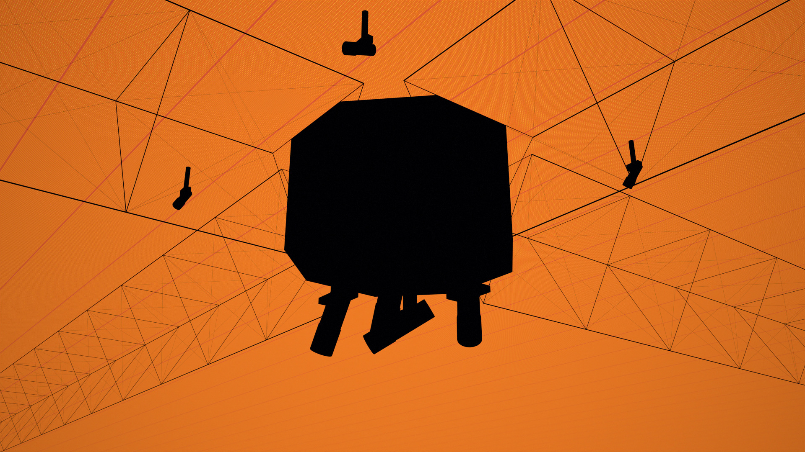
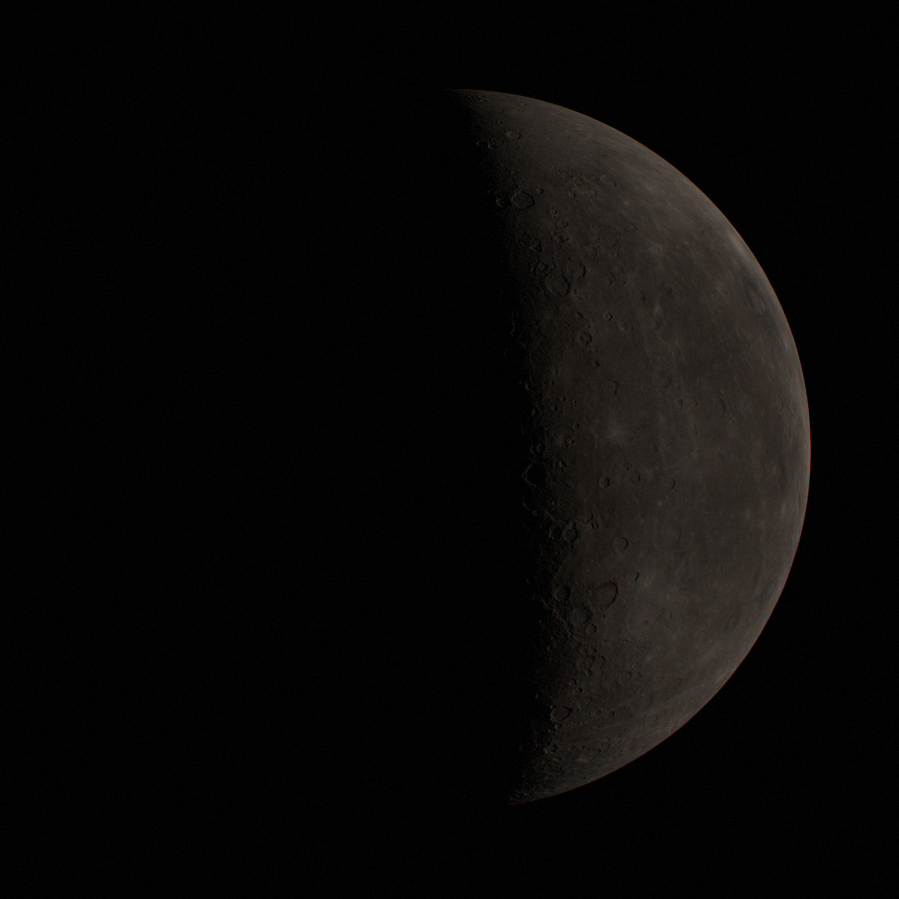
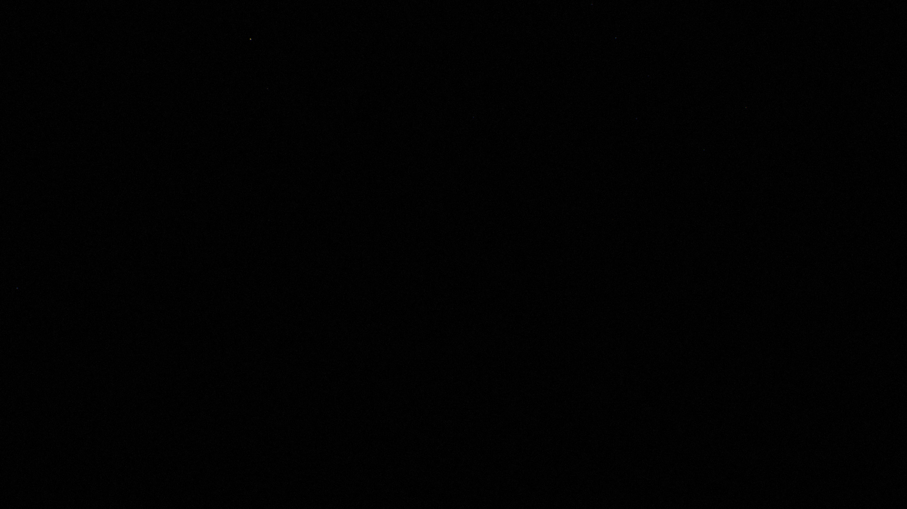
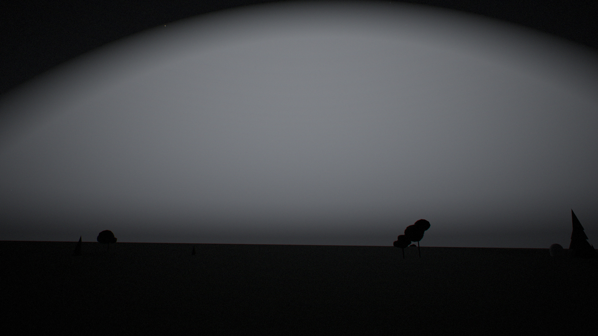

What if Mercury were mined into solar panels that are also computers, and flown around the Sun? Every photograph and number here comes from one physics model. Change an assumption and the whole page recomputes.
Hardware
The satellite
A sheet, not a box
Thermal infrared
The panel is the computer


320 K350 K
Concentrated or spread out
Why the chips are not in one box
The mine
Mercury, before and after


Timeline
How fast it can be built, and where it stops
The binding constraint
Earth decides how big it may get


Seen from another star
The Sun dims, and a cool infrared star appears
Built later than you think